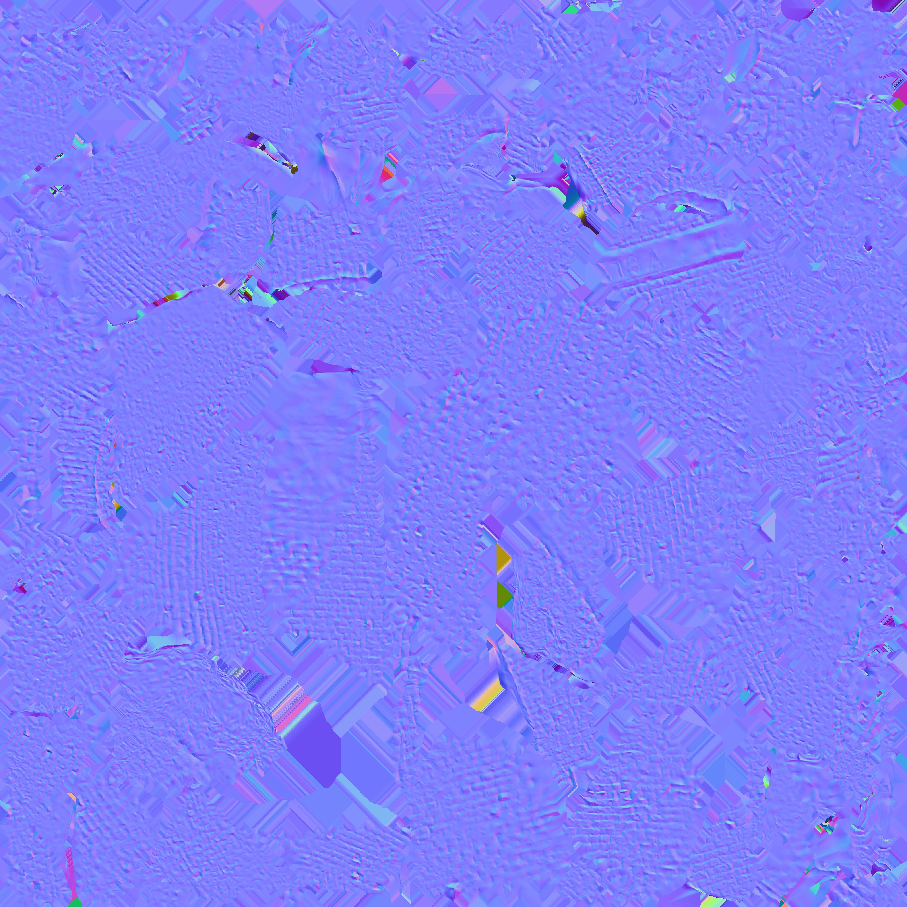
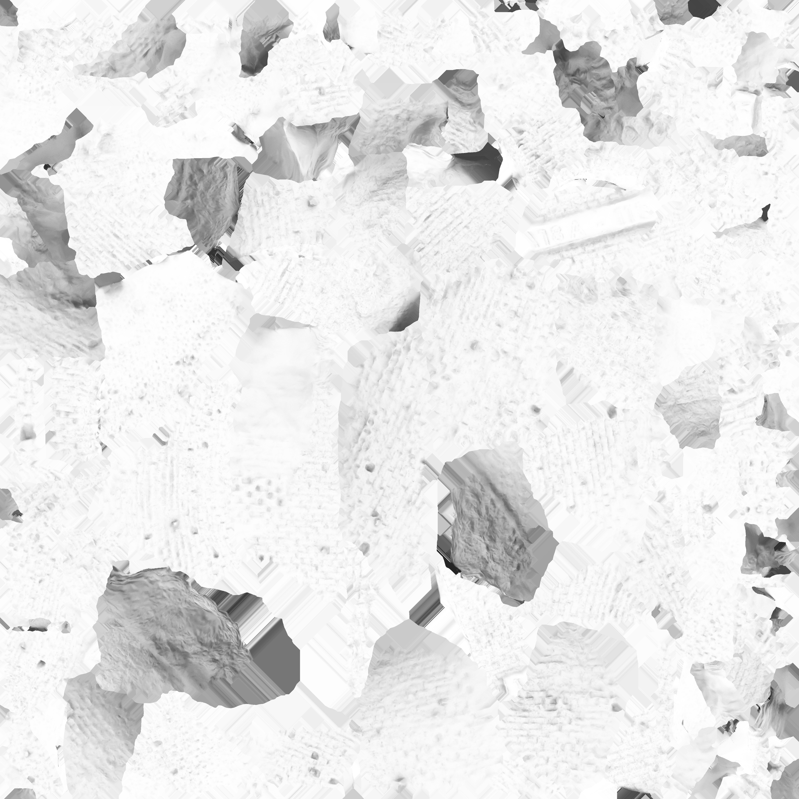

<html>
    <head>

        <!-- include A-Frame obviously -->

        <script src="https://cdn.jsdelivr.net/gh/aframevr/aframe@1.4.0/dist/aframe-master.min.js"></script>


        <!-- include ar.js for A-Frame -->
        <!--<script src="https://jeromeetienne.github.io/AR.js/aframe/build/aframe-ar.js"></script>-->

        <script src="libraries/aframe-ar.js"></script>
        
    </head>

    <body>

        <a-scene embedded arjs>
            <!-- create your content here. just a box for now -->

            <!-- define your gltf asset -->
            <a-assets timeout="10000">
                <a-asset-item id="poly-obj" src="assets/poly.obj"></a-asset-item>
                <a-asset-item id="poly-mtl" src="assets/poly.mtl"></a-asset-item>
                <!--



-->
            </a-assets>

            <a-entity scale=".5 .5 .5"
                      obj-model="obj: #poly-obj; mtl: #poly-mtl" rotation="0 0 0"></a-entity>


            <!-- use your gltf model -->
<!--
            <a-entity obj-model="obj: #poly; mtl: #poly" >

            </a-entity>
-->

            <a-box position='0 0.5 0' material='opacity: 0.5;'></a-box>


            <!-- define a camera which will move according to the marker position -->
            <a-marker-camera preset='hiro'></a-marker-camera>

        </a-scene>
    </body>
</html>